动账短信用豆包识别
收到银行的动账短信时，快捷指令自动把正文交给你手机上的豆包识别，结果送进司元的「待处理」。你点确认才会记账。全程免费，不用开着司元。
要准备的
- 司元
- 豆包（App Store 免费下载，登录一次）
- 快捷指令（系统自带）
不确定是哪个版本：打开「设置 › 通用 › 关于本机」，看「iOS 版本」。
先看一遍演示（1 分 40 秒）
从打开司元到设置完成，每一步都有字幕，红框是要点的地方。下面是同样的步骤，配了截图。
最容易做错的一步
「收到信息时」这个触发条件，要加在「动账短信用豆包识别」这条快捷指令里面（见第 2 步）。
不要另外新建一条快捷指令，在里面加触发条件、再用「运行快捷指令」去运行它。那样短信内容传不过去，司元会提示「递进来的东西是空的」。

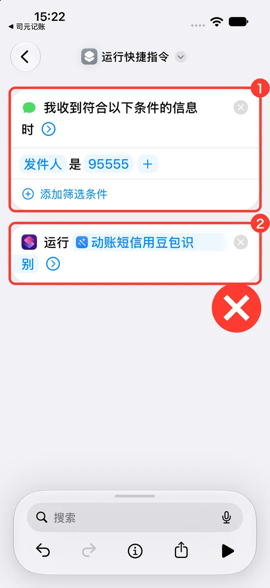
-
把快捷指令装进来
-
打开司元，点首页右上角的齿轮，进入设置。
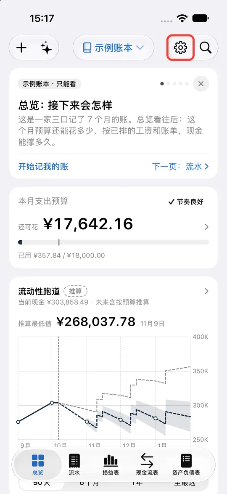
-
依次点「助手、Siri 与快捷指令」 › 「用豆包识别」 › 「动账短信」。
-
点蓝色按钮「添加到快捷指令」，在弹出的面板里点「快捷指令」。
-
跳到「快捷指令」后，点底部的「添加快捷指令」。
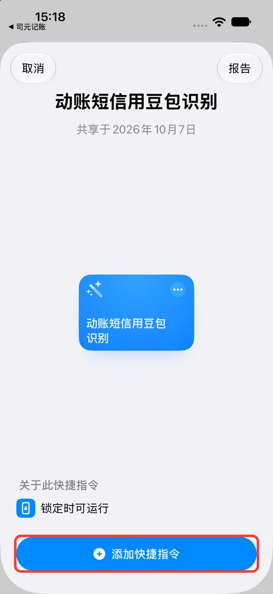
添加好以后，会直接打开这条快捷指令的编辑页，接着做第 2 步。
-
-
让它收到短信就自动运行
-
在「动账短信用豆包识别」的编辑页里，点底部的「搜索」。
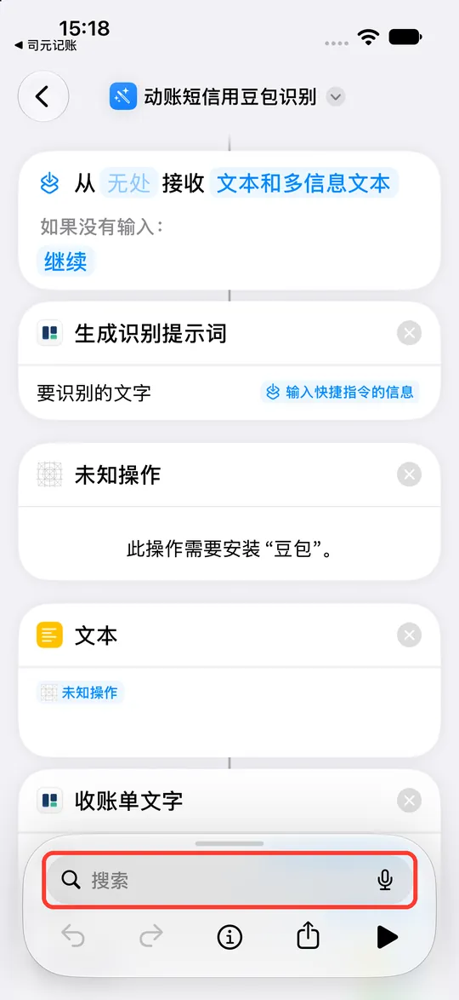
没在编辑页的话：打开「快捷指令」App，点「动账短信用豆包识别」这张卡片的空白处就能进来（别点卡片右上角的三角形，那是运行）。截图里那一块显示「未知操作」是因为截图用的手机没装豆包，你手机上那里是豆包的操作。
-
点「自动化」。
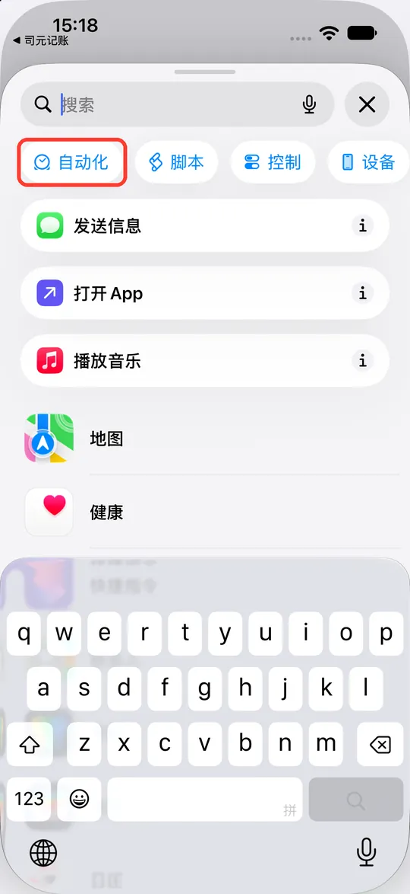
-
收起键盘，往下翻到「通信」，点「信息」。
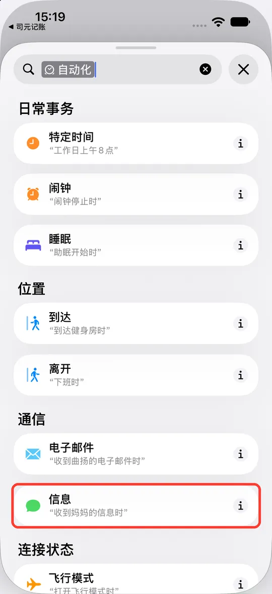
-
这条快捷指令里多了一块 ①「我收到符合以下条件的信息时」。点里面浅色的 ②「发件人」。
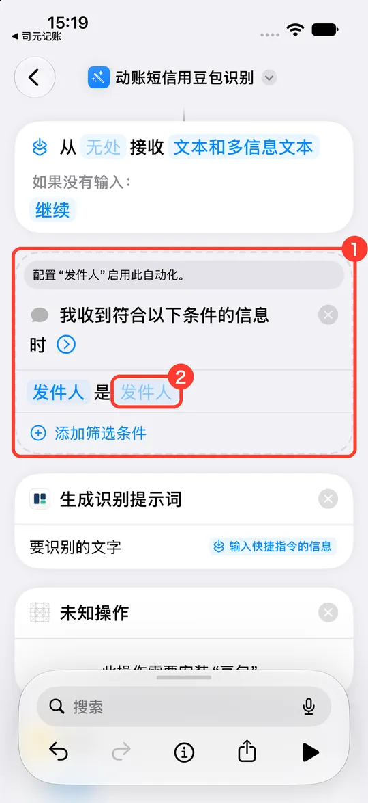
-
输入银行发短信的号码，按键盘上的换行，号码会变成一个蓝色小块。几家银行就填几个，每填一个按一次换行。
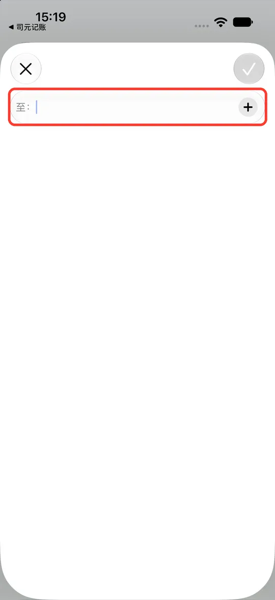
输入号码 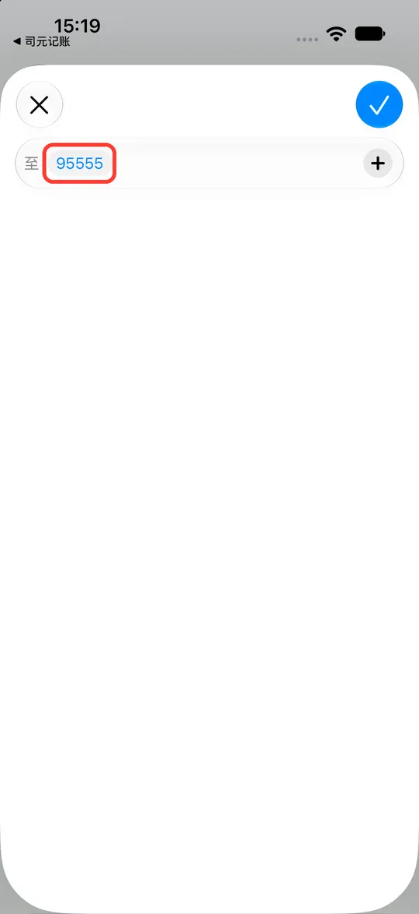
按换行后变成蓝色小块 -
都填好后，点右上角蓝色的对勾。
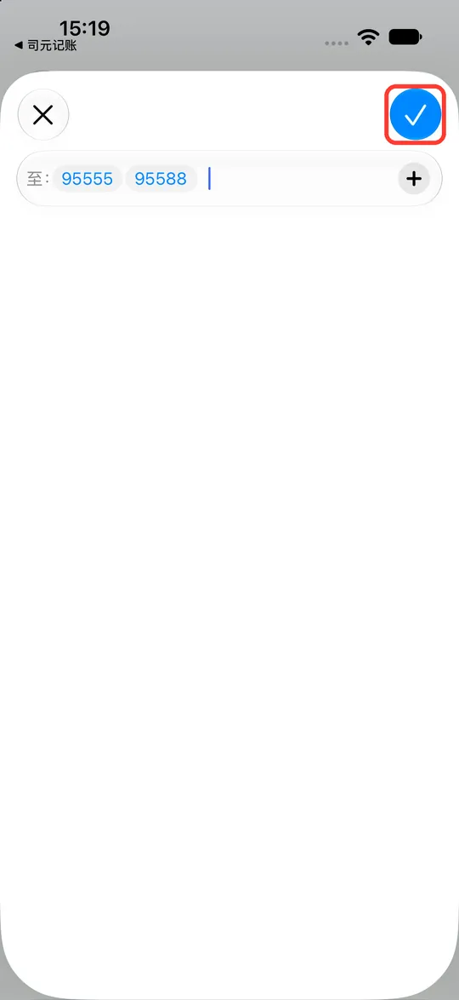
-
号码填进去了。点「时」右边的小箭头，展开更多选项。
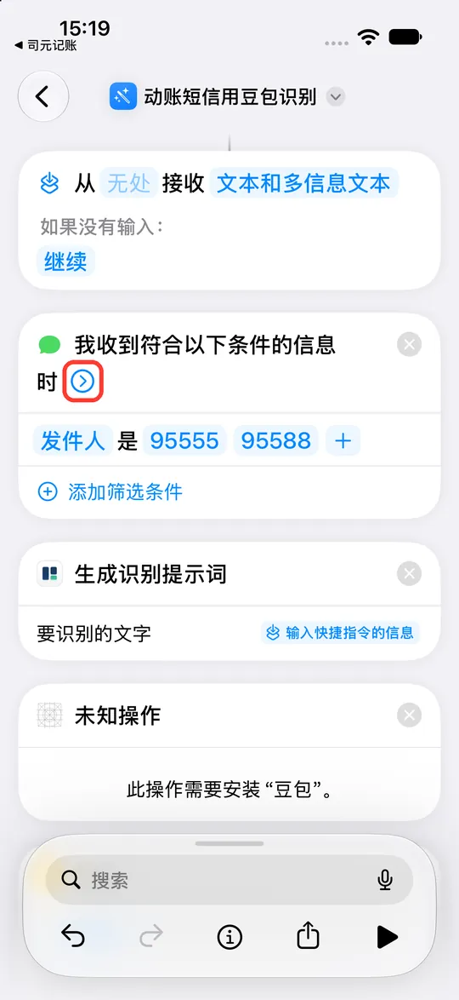
-
① 确认「自动化」开着、「运行前确认」关着（默认就是这样）。② 点左上角返回，自动保存。
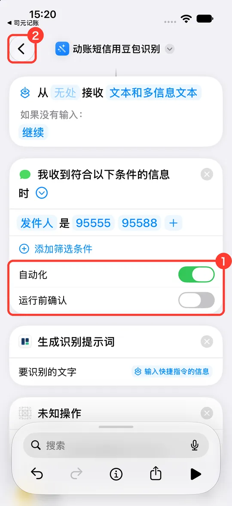
- 打开「快捷指令」，点底部的「自动化」，再点右上角的「＋」。
- 在列表里选「信息」。
- 点「发件人」后面的「选取」，填银行发短信的号码。几家银行可以都填上。
- 下面选「立即运行」（不要选「确认后运行」），点右上角「下一步」。
- 在快捷指令列表里选「动账短信用豆包识别」，完成。
银行的短信号码以你手机里收到的短信为准，有的银行用 106 开头的长号码发。常见的有：工商 95588、农业 95599、中国银行 95566、建设 95533、交通 95559、招商 95555、邮储 95580。
-
-
先手动运行一次
-
回到「快捷指令」的列表，点「动账短信用豆包识别」卡片右上角的三角形。
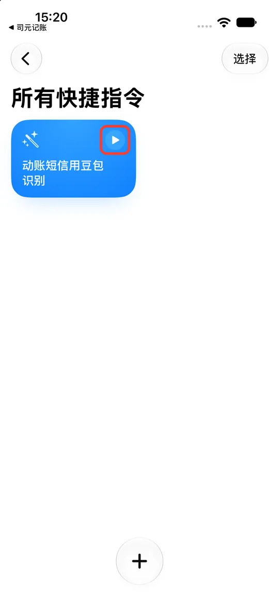
-
系统问能不能使用司元，点「允许」。接着还会问能不能使用豆包，同样点「允许」。
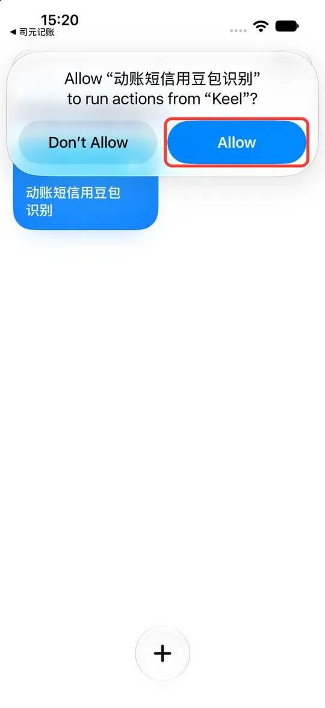
在「快捷指令」里点一下「动账短信用豆包识别」。系统会问能不能使用司元、能不能使用豆包，都选「允许」。
问过这一次，以后收到短信自动运行就不会停下来等你。这次没有短信内容，后面出现的报错直接关掉即可。
-
-
收到短信后去确认
收到动账短信几秒后，打开司元，首页「待处理」里会多一条「待记的截图与文字」。点进去，金额、时间、商户等已经填好，核对后确认才会记进账本。


想马上试一下
按发件人设的条件，朋友发来的短信不会触发。测试时可以临时把条件改一改：
- 回到第 2 步，把发件人删掉，点「添加筛选条件」，改成「信息包含」，填
人民币。 - 用另一台手机把下面这段发给你：
【招商银行】您账户8866于10月07日12:31在美团/大众点评快捷支付扣款人民币38.50元，余额2,416.72元。
- 看司元的「待处理」里有没有出现这一笔。
- 测完一定要改回按发件人，不然聊天里提到「人民币」也会被送进来。
常见问题
提示「递进来的东西是空的」
触发条件没加在「动账短信用豆包识别」里面，而是另建了一条快捷指令去「运行」它，短信内容没传过去。删掉另建的那条，按第 2 步把触发条件加进「动账短信用豆包识别」本身即可。对照页面上方「最容易做错的一步」那张图。
快捷指令里显示「未知操作」「此操作需要安装“豆包”」
手机上还没装豆包。去 App Store 装好、打开并登录一次，回来就正常了。
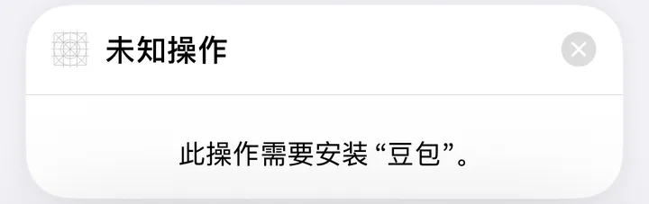
收到短信了，但待处理里什么都没有
- 对一下发件人号码和短信里显示的是不是同一个。
- 确认「运行前确认」是关着的。
- 确认第 3 步手动运行过一次，并且都点了「允许」。
有些栏目是空的
豆包没认出来的就留空，不会乱填。确认的时候补上即可。
发给豆包的是什么
短信正文（里面通常有金额、余额和卡号尾号），以及你在司元里的收支分类名称（让豆包按你的分类归类）。你在司元里的账户名称和账本内容不会发出。豆包怎么处理这些内容，以豆包的隐私政策为准。
不想用了
在「快捷指令」里删掉「动账短信用豆包识别」这条快捷指令即可，司元里的账不受影响。